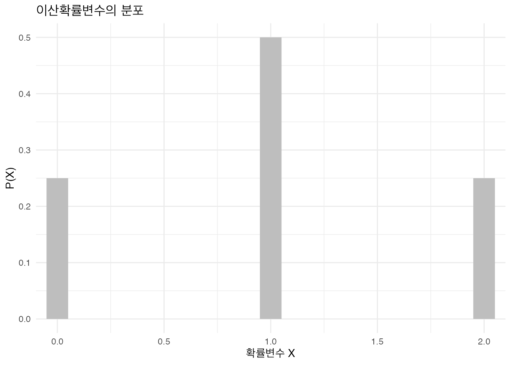
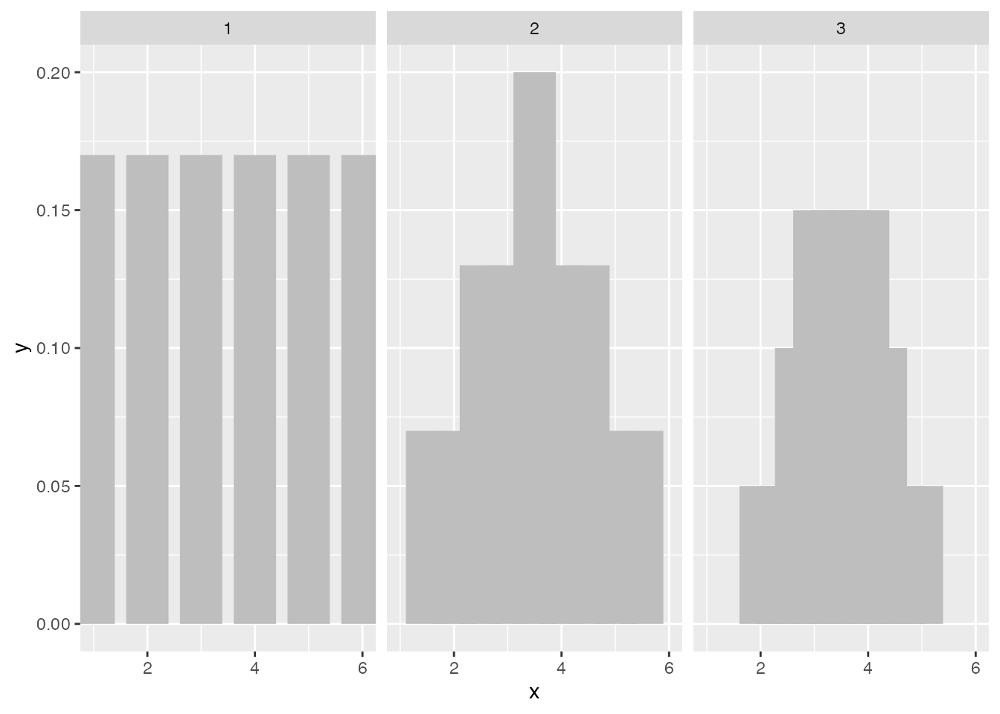
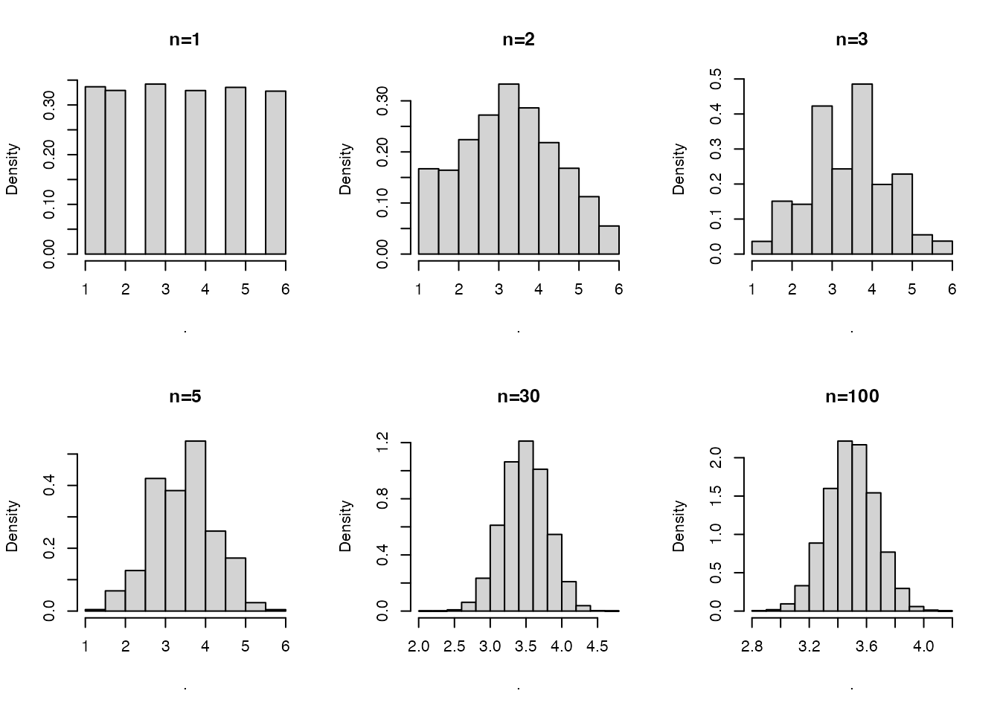

Chapter 5 추론통계과 가설검정
- 추론통계와 확률
- 기술통계와 추론통계
- 확률과 확률변수
- 확률변수와 확률분포
- 확률분포함수와 확률밀도함수
- 대표적인 확률분포
- 정규분포
- 표준정규분포
- 카이스퀘어분포
- F 분포
- 중심극한정리
- 표본평균과 표본평균분포
- 중심극한정리의 활용
- 가설검정
- 가설과 가설 검정
- 점추정
- 구간추정
- 가설의 채택이란 무엇인가? 신뢰구간의 해석은?
- 점추정과 구간 추정
5.1 추론통계와 확률
5.1.1 기술통계와 추론통계
우리가 연구 장면에서 마주하는 통계는 크게 두가지, (1) 기술통계와 (2) 추론통계로 구분된다. 기술통계는 descriptive statistics로 불리며, 말그대로 자료data를 기술(describing) 하는 목적을 갖는다. 추론통계는 inference statistics로 불리우며, 표본sample에서 확인되는 통계량statistics로 모집단population의 모수치parameter를 추정(inferering) 하는것을 목적으로 한다.
예를 들어 서울대학교 재학생 전체 5,000명의 키 데이터를 운좋게 갖고 있다고 생각해보자. 이들의 키 평균, 표준편차, 사분위수, 분포 등의 정보는 기술통계이다. 만약 2500명의 남학생과 2500명의 여학생의 키 평균의 차이가 0.1cm로 나타났다면? 우리가 갖고 있는 데이타는 서울대학교 재학생 전체의 데이터이기 때문에 별도의 추가 분석 없이 “성별에 따라 키의 차이가 있다”고 자신있게 이야기할 수 있다. 모집단의 자료를 모두 갖고 있는 데 통계적인 차이 검정을 할 필요가 없는 것이다.
반면에 추론통계는 우리가 5,000명의 모집단에 대한 정보나 자료를 갖지 못할때 활용한다. 만약 이 가운데 100명의 표본만 갖고 있다면 표본의 통계량을 통해 모집단을 추정해야 하는 추론통계가 필요하다. 표본중 50명의 여성과 50명의 남성의 키 평균 차이가 5cm로 나타났다고 생각해보자. 5cm는 충분히 큰 격차이지만 우리는 t 검정을 통해 “통계적으로 유의미한 차이”가 있는지 확인해야 한다. 왜냐하면 우리가 뽑은 표본이 모집단의 분포에서 어디에서 왔는지 알수 없기 떄문이다. 예를 들어 여자는 극단적으로 키가 작은 사람들로 표집되고, 남자는 극단으로 키가 큰 사람들로 표집되었을 수 있다. 이 경우 실제 모집단에서는 성별에 따른 키 차이가 그다지 없지만 표본에서만 과다한 격차를 보일 수도 있기 때문이다.
산업인력개발 현업에서도 기술통계와 추론 통계를 구분하지 않고 보고서가 작성되는 경우가 많다. 예를 들어 A 기업에서 리더십 교육을 받은 직원들의 교육 전후 지식의 차이를 확인한다고 생각해보자. 만약 리더십교육을 받은 사람들을 모집단으로 설정하고, 이들에 대한 데이터를 모두 수집할 수 있다면 추론통계는 그다지 의미가 없을 수 있다. 하지만 우리는 습관적으로 t 검정이나 ANOVA와 같은 추론통계를 사용한다. 언제 추론통계와 기술통계를 사용하여야 하는지를 명확히 이해하는것이 중요하다.
5.1.2 확률probability과 확률변수random variable
추론통계와 기술통계의 가장 큰 차이는 확률 probability의 유무이다. 추론통계는 표본량을 활용해 모수치를 추정하는 과정에서 확률의 개념이 활용된다는 점이 가장 특징적이다.
확률은 경험 또는 실험 결과로 특정한 사건이나 결과가 발생할 가능성을 의미한다. 가장 대표적인 확률은 주사위를 던졌을 때(실험) 각각의 눈이 나올 확률(특정 사건이 발생하는 가능성)이다. 이때 연구자가 주사위를 한번던져서 나온 눈의 개수를 변수값(value)로 정의하여 이를 변수 X로 정의한다면 X는 확률변수가 된다. 여기서 변수variable 의 정의에 대해 추가로 이해할 필요가 있다. 변수는 상수constant와 달리 “변하는 수”이며 특정한 척도로 측정하여 그 결과를 수치로 기록한 값을 의미한다. 결국 변수에는 (1)다양한 변수값이 부여되고, (2)변수값은 “척도로 측정”한다는 의미를 동시에 갖고 있다.
지금부터는 두개의 동전을 던지는 실험을 통해 확률변수의 개념을 이해해보도록 하겠다. 이 과정에서 정의되는 것은 다음의 3가지 요소이다
- 실험(experiment) : 어떤 행위의 결과를 관찰하고 측정하여 그 결과에 대해 구체적인 값을 부여한다.
- 예: 두 개의 동전을 던져서, 앞면이 나오면 2, 뒤면이 나오면 0의 값을 부여하여, 이를 더한다.
- 표본점 : 실험결과로 발생할 수 있는 결과
- 예: 동전이 앞, 앞이 나온다, 동전이 앞, 뒤가 나온다 등
- 표본공간 : 실험결과로 발생할 수 있는 “모든” 가능한 결과(표본점)의 집합 + 예: {앞,앞}, {앞, 뒤}, {뒤, 앞}, {뒤, 뒤}
- 확률변수 : 표본공간상에 나타나는 모든 표본점들에 수치를 부여하는 규칙
- 예: 확률변수 X= {2+2}, {2+0}, {0+2}, {0+0}
위의 실험에서 확인할 수 있듯이 확률변수는 연구자에 따라 다양한 규칙에 따라 수치를 부여할 수 있기 떄문에(예: 앞면은 1, 뒷면은 2의 값을 부여하고 곱한다), 하나의 표본공간으로부터 수없이 많은 확률변수들이 생성될 수 있다.
이상의 표본공간, 확률변수 X, 확률변수 X가 나타날 확률을 표로 정리해보면 다음과 같다.
| 표본공간 | {H, H} | {H, T} | {T, H} | {T, T} |
|---|---|---|---|---|
| 확률변수 X | 4 | 2 | 2 | 0 |
| 확률변수 x가 나타날 확률 (P) | 1/4 | 1/4 | 1/4 | 1/4 |
5.1.3 확률변수random variable와 확률분포probability distribution
확률변수random variable은 분포distribution의 정보 없이는 어떠한 의미를 갖지 못한다. 예를 들어 김태형의 삶의 만족도가 40점이라면, 만족한다고 할 수 있을 까? 판단을 위해서는 우리가 알아야 할 정보가 있다. 첫째, 표본공간을 알아야 한다. 만족도 점수가 0점부터 50점까지 분포한다. 둘째, 단일표본점의 발생확률을 알아야 한다. 각 점수가 발생할 확률은 동일하다. 이 두 정보를 알게 되면 확률분포를 그릴 수 있다.
확률분포probability distribution는 확률변수가 특정한 값을 가질 확률을 나타내는 함수를 의미한다. 함수란 무엇인가? y=f(x)를 떠올려보자. x에 특정한 값을 투입했을때 특정한 y값이 산출되는 일종의 규칙이다. 말이 나온김에 어렵게 느껴지는 함수의 의미를 정확히 이해해보자. 함수는 일종의 자판기와 같다. 1을 집어넣으면 2가 나오고, 2를 집어넣으면 4, 3을 집어넣으면 6이 나오는 자판기가 있다고 생각해보자. 이 자판기의 규칙은 무엇일까? 투입하는 값(x)의 2배가 되는 값(y)을 산출해주는 것이 규칙이다. 이러한 규칙을 바로 함수라고 하는데, 위의 예를 수식으로 쓰면 y=2x이다. 이 설명을 좀더 수학적으로 설명해보면 함수란 집합의 임의의 한 원소를 다른 집합의 한 원소에 대응시키는 관계라고 설명할 수 있을 것이다.
그림 추가
다시 확률분포로 돌아오면, 확률분포는 확률변수를 X로 하고, 확률변수의 발생 확률(P(x))를 y로 하는 규칙이다. 동전을 던지는 실험에서 정의한 확률변수 X를 생각해보자. 이를 간단히 그래프로 표현하면 아래와 같다. X 축에는 확률변수 X가 가질 수 있는 값 {0, 2, 4}이 표현되고, Y 축에는 각 값이 나타날 확률인 1/4, 1/2, 1/4가 표현된다.
## Warning: Using `size` aesthetic for lines was deprecated in ggplot2 3.4.0.
## ℹ Please use `linewidth` instead.
## This warning is displayed once per session.
## Call `lifecycle::last_lifecycle_warnings()` to see where this warning was
## generated.
이때 확률변수 X는 비연속적인 값을 갖고 있다. 즉 값의 갯수를 셀수 있다(0, 2, 4중 하나의 값만 가진다). 이처럼 변수값이 한정적인 경우는 이산확률변수(discrete random variable)라고 명명한다. 반대로 확률변수 값의 갯수를 셀 수 없는 경우가 연속확률변수(continuous random variable)이다. 연속확률변수 X는 실생활에서 자주 찾아볼 수 있다. 20대 여성의 키(cm), 우리나라 성인의 (IQ), 고등학교 진로교육만족도(5점 likert) 등이 대표적이다.
5.1.4 확률질량함수와 확률밀도함수
확률변수분포에 대한 이해를 마쳤다면, 좀더 구체적으로 이산확률변수와 연속확률변수의 특정한 값에 대한 확률을 구하는 방법을 알아보자. 예를 들어 주사위를 두번던져서 나온 눈의 값의 합이 3이 나올 확률은 얼마일까?(이산확률변수의 확률), 우리나라 20대 여성의 키가 165cm~168cm의 값을 가질 확률은 얼마일까?(연속확률변수의 확률). 이러한 질문에 대한 답은 확률질량함수와 확률밀도함수에 있다.
5.1.4.1 확률질량함수 (probability mass funtion, pmf)
확률질량함수와 확률밀도함수는 매우 유사한 개념이다. 다만 확률변수의 특성(이산변수 vs 연속형 변수)에 따라 y축의 값이 변하는 것에 차이가 있다. 확률질량함수는 확률변수가 이산형(비연속형)일때 쓰인다. 확률변수가 이산형일때 확률질량함수를 그래프로 표현하는 것은 아주 직관적이다. 위의 그림처럼 x축이 확률변수의 값(0, 2, 4)이고, y축이 확률변수가 나타날 확률(P(x))이기 때문이다.
5.1.4.2 확률밀도함수 (probability density function, pdf)
확률밀도함수는 확률변수가 연속형일때 쓰인다. 이산형 변수와 달리 확률밀도함수의 y축은 P(x)가 아니다. 왜일까? 연속형 변수의 개념을 잘 생각해보면 답이 있다. 확률변수 X를 우리나라 20대 여성의 평균 키라고 생각해보면, 확률변수 X가 165일 확률은 0이다. 왜냐하면 165라는 이산적인 값을 가질 수 없기 때문이다(165앞뒤로 0.0000000…..1의 간격으로 조밀하게 값이 분포해있는것을 떠올려보자). 따라서 연속형 확률변수가 특정값을 가질 확률은 구할 수 없고, 특정 구간(예: 160~165사이)에 분포할 확률을 구해야 한다. 이를 위해 확률밀도함수는 밀도의 개념을 사용하여 확률을 계산한다. 앞서 이산확률분포일때의 확률 함수를 확률질량함수라고 했던것을 기억해보자. 이때 y 축은 질량(mass)이며, 이것을 확률변수(X)가 나타날 확률(probability)로 정의한 바 있다. 다음의 4개의 식을 통해 확률밀도함수의 구간 면적(확률변수 x가 구간에 있을 확률)을 밀도로 표현하는 것을 이해할 수 있다.
질량 = 확률변수 X가 나타날 확률
부피 = 계급크기, X축의 구간(\(a<X<b\))
밀도 = 질량/부피
밀도 = 확률변수 X가 나타날 확률/계급크기
확률밀도함수의 구간면적 = \(a<X<b\) 사각형의 면적 = 해당구간을 정적분한 값
밀도 * 부피 (사각형의 넓이 구하는 공식)= 확률변수 x가 나타날 확률/계급크기 * 계급크기 = 확률변수 X가 나타날 확률
위의 설명은 아래의 수식(5.1)을 통해 보다 명확히 이해할 수 있다. 중요한 것은 확률변수 X가 발생할 확률은 구간의 면적과 같다는 점이다. 이 원리는 앞으로 다양한 확률분포를 활용해서 가설을 검정할때 사용되므로 분명히 이해하는 것이 좋다.
\[\begin{equation} P(a<x<b)=\int_{a}^{b}f(x)dx \tag{5.1} \end{equation}\]
확률변수 X는 무한대라고 가정하면, 확률밀도함수의 전체 면적은 1이다. 왜나하면 모든 표본점의 발생확률을 더한 값과 같기 때문이다(5.2)
\[\begin{equation} P(-\infty <x<\infty)=\int_{-\infty}^{\infty}f(x)dx =1 \tag{5.2} \end{equation}\]
5.2 대표적인 확률분포
지금부터는 실제 연구에서 활용되는 다양한 종류의 확률분포에 대해 알아보자. 무수히 많은 확률분포 중에서 분포의 특성을 파악하여 함수로 나타낼 수 있는 대표적인 확률분포들이다. 확률분포는 확률변수의 연속성 여부에 따라 달라진다. 이산확률분포에는 대표적으로 이항분포, 포아송분포가, 연속확률 분 표준정규분포(Z분포), t분포, 카이제곱검정, F검정 등이 있다. 산업인력개발분야에서 활용되는 대부분의 확률변수는 연속적이기 때문에 이 장에서는 연속확률분포에 대해서만 언급하도록 하겠다. 다만 이항분포의 경우 로짓분석에서 사용되므로 해당 장에서 자세히 설명하도록 하겠다.
5.2.1 정규분포
연속확률분포에서 가장 기초적으로 이해해야 하는 것은 정규분포(normal distribution) 이다. 우리가 분포라는 단어를 들으면 떠오르는 종 모양의 대칭형 분포가 정규분포이다. 좀더 구체적으로 정규분포에 대해 살펴보면 다음과 같다. 정규분포의 확률밀도함수는 (5.3)과 같다.
\[\begin{equation} f(x) = \frac{1}{\sqrt{2\pi \sigma^{2}}} e^{-\frac{1}{2}\left [ \frac{x-\mu }{\sigma } \right ]^{2}}, -\infty<x<\infty \tag{5.3} \end{equation}\]
위의 식은 매우 복잡해보이지만, 차근차근 살펴보면 어려울것이없다(물론 외울필요도 없다). 확률밀도함수를 그래프로 이해해보면, \(x\)축은 \(x\)의 값이, \(y\)축은 \(f(x)\)의 값이 부여된다.
- 이때, \(x\)는 음의 무한대에서 양의 무한대의 값을 갖는다.
- \(\pi\)와 e는 상수이다. (\(\pi\)는 3.14, e는 2.718의 값을 나타낸다는 것을 기억하라)
- x와 상수값을 제외하면 남는 것은 평균(\(\mu\))와 표준편차(\(\sigma\))의 값이다.
결국 정규분포는 어떠한 확률변수 x의 평균과 분산(표준편차의 제곱근)에 따라 그 모양이 달라질 것이라고 예상할 수 있다. 이러한 의미에서 평균과 분산을 각각 위치모수(location parameter)와 척도 모수(scale parameter)라고 부른다. 아래 그림을 보면 확률변수 x의 평균값이 분포의 대칭축이기 때문에, 평균값의 변화에 따라 정규분포의 위치가 이동하는 것을 볼 수 있다. 또한 분산의 경우 종모양이 퍼진정도를 결정하는 것을 볼 수 있다.
- 그림 두개
확률변수 X가 평균(\(\mu\))과 분산(\(\sigma\))의 값을 갖는 정규분포라는 것을 식으로 표현하면 (5.4)과 같다.
\[\begin{equation} X\sim N(\mu, \sigma)\tag{5.4} \end{equation}\]
정규분포가 갖는 또 하나의 특징은 평균값을 기준으로 대칭적이라는 것이다. 이는 이후에 가설검정을 할때 큰 도움이 된다. 왜냐하면 왼쪽과 오른쪽의 면적을 각각 구할 필요 없이, 한쪽 면적의 2배로 계산하면 되기 때문이다. 관련한 설명은 표준정규분포에서 좀더 자세히 설명하겠다. 종모양의 분포라고 해서 모두 정규분포라고 할 순 없다. 정규분포가 되기 위해서는 측정 관측치들이 1표준편차 이내에 68.26%, 2표준편차 이내에 95.44%, 3표준편차 이내에 99.74%가 존재해야한다. 1표준편차 이내에도 상당한 비율로 자료가 분포하기 떄문에 종모양의 중앙이 볼록할 수록 정규분포에 더욱 가까워진다고 추측할 수 있다. 여기서 68,26%의 관측치가 1표준편차 이내에 분포한다는 것이 무슨 뜻일까? 아래 그림에서 볼 수 있듯이 평균(\(\mu\))를 기준으로 좌우 -1표준편차(\(\mu+1\sigma\)), +1표준편차(\(\mu-1\sigma\))만큼의 구간에 해당되는 면적이 0.6826이라는 뜻이다(확률밀도함수의 전체 면적은 1이라는 점을 기억하자!)
5.2.2 표준정규분포 (standard normal distribution)
표준정규분포는 특수한 형태의 정규분포이다. 즉, 수많은 정규분포 중 하나이다. 표준정규분포는 평균(\(\mu\))은 0이고, 분산(\(\sigma\))은 1인 정규분포이다((5.5)).
\[\begin{equation} X\sim N(1,0) \tag{5.5} \end{equation}\]
표준정규분포는 왜 필요할까? 정규분포상에서 확률분포가 특정 구간내의 값을 가질 확률을 직접 구하기 어려운 문제를 푸는데 사용된다. 수없이 많은 확률변수 X는 수없이 많은 평균과 표준편차 값을 갖고 있다. 따라서 특정 구간의 확률을 구하기 위해서는 각각의 확률밀도함수를 일일히 적분해야만 한다. 우리가 가설검정을 할때마다 적분을 해야한다고 생각해보자. 얼마나 끔찍하고 지루한가! 다행히 모든 정규본포는 확률변수의 표준화를 통해 표준정규분포로 변환시킬 수 있다. 따라서 표준정규분포의 구간 적분값을 이용해서 모든 정규분포의 구간 적분값을 구할 수 있다. 모든 확률변수는 (5.6)과 같이 선형적 변형에 의해 표준정규분포로 만들 수 있다.
\[\begin{equation} Z=\frac{x-\mu}{\sigma} \tag{5.6} \end{equation}\]
만일 내가 갖고 있는 확률변수 X의 분포가 평균 100, 분산은 25라고 가정해보자. 확률변수 X가 10보다 크고 100보다 작을 확률을 구한다면 다음과 같이 확률변수 X를 Z-score로 표준화한다.
\[\begin{equation} X\sim N(100, 5^{2}), P(90<X<100) Z\sim N(0, 1^{2}), P(\frac{90-100}{5}<Z<\frac{100-100}{5}) \tag{5.7} \end{equation}\]
우리는 표준정규분포의 P(-2<Z<0)의 확률을 확인함으로서, 별도의 적분없이 확률변수 X의 구간의 확률을 구할 수 있다. 왜냐하면 표준정규분포의 구간확률은 이미 계산되어 알려져있기 떄문이다. 거의 모든 통계책의 뒷면을 보면 표준정규분포를 포함한 대표분포의 구간확률이 이미 계산되어 있다.
아래의 Z분포 표를 이해하는 것은 매우 중요하다. 이후에 가설검정과도 연결되어 있기 때문이다. Z분포표를 통해 P(-2<Z<0)의 확률을 구해보자. 여기서 약간의 고민이 필요한데 Z분포표에서는 대부분 양수의 값만을 표시해주기 때문이다. 이때 떠올려야할 것은 다음의 세가지이다. * (1) 정규분포는 대칭이다. * (2) 정규분포밀도함수의 면적의 총합은 1이다. * (3) 정규분포밀도함수의 \(P(0<Z<\infty)\)는 따라서 0.5이다.
이 세 가지 특성을 활용하면 \(P(−2<Z<0)\)은 \(P(Z<2)−0.5\)와 같음을 알 수 있다. \(P(Z<2)\)는 Z-score table에서 찾을 수 있다. 아래 표에서는 각 행(row)는 소수점 첫재짜리, 각 열(column)은 소수점 둘째자리를 하므로 \(P(Z<2.00)\)은 0.9772임을 알 수 있다. 우리가 구하고 싶은 값은 \(P(-2<Z<0)\)이므로 0.9772-0.5=0.4772가 \(P(90<X<100) = P(-2<Z<0)=0.4772\)임을 확인할 수 있다. 다시 말해 평균이 100, 분산이 25인 정규분포를 띄는 확률변수 \(X\)가 90보다 크고 100보다 작을 확률이 0.4772이다.
Z-score table을 활용해 정규분포의 특징중 하나를 실제로 확인해보자. 앞서 모든 정규분포는 \(\pm1 표준편차(\sigma)\), \(\pm2 표준편차(\sigma)\), \(\pm3 표준편차(\sigma)/\) 이내에 68.26%, 95.44%, 99.74%의 값을 갖는다고 말한바 있다. 표준정규분포 역시 정규분포의 한 종류이기 떄문에 이 조건을 만족한다. 표준정규분포의 표준편차는 1이므로 우리가 구해야 구간은 각각 \(P(-1<Z<1)\), \(P(-2<Z<2)\), \(P(-3<Z<3)\)이다. \(P(-1<Z<1)\)의 값만 구해보면, 위의 표에서 \(P(Z<1)=0.8413\)이다. 따라서 \(P(0<z<1)\)은 \(0.8413-0.5=0.3413\)의 확률을 갖는다. \(P(-1<Z<1)\)은 면적이 두배이므로 \(0.3413\times2=0.6826\)이 나온다. 전술한 값인 68.26%와 동일한 것을 확인할 수 있다.
5.2.3 카이스퀘어분포 chi-square distribution
다음으로 알아볼 확률분포는 카이제곱분포chi-square distribution이다. 카이제곱분포는 감마 분포의 일종이다. 카이제곱 분포는 모집단 분산에 대한 가설검정이나 교차분석에서 유용하게 활용된다. 카이제곱분포는 항상 양(positive value)의 값을 가진다는 특징을 갖고 있고, 오른쪽 꼬리가 길게 떨어지는 비대칭 분포이다. 카이제곱분포는 자유도(df)에 따라 모양이 변한다. 자유도의 개념은 이후에 다시 설명하도록 하겠다. 자유도에 따라 카이제곱분포의 모양이 변하는데, 자유도가 커질수록 오른쪽 꼬리가 짧아지면서 정규분포에 가까운 모양이 된다. 따라서 자유도가 무한대가 되면 정규분포와 동일해 진다.
[그림 삽입]
따라서 카이제곱분포에서 구간 확률을 구할때는 자유도 정보가 반드시 필요하다. 자유도에 따라 확률밀도함수의 모양이 달라지기 때문이다.
5.2.4 F 분포 F distribution
F분포는 ANOVA, 회귀분석 등 우리에게 친숙한 추론통계에서 자주 사용한다. 카이제곱분포를 갖는 2개의 확률변수 값을 각각의 자유도로 나눈 평균 카이제곱값의 비ratio인 F값을 확률변수로 두는 분포를 말한다. 여기서 중요한 개념은 카이제곱 분포를 갖는 2개의 확률변수 값인데, ANOVA에서는 집단내 편차와 집단간 편차, 회귀분석에서는 모형설명분산과 residual 분산이 여기에 포함된다. 2개의 확률변수의 카이제곱값의 평균의 비ratio 이기 때문에 자유도 역시 2개가 포함된다 F 분포는 카이제곱분포와 유사하게 항상 양의 값만을 가지며, 오른쪽 꼬리 모양을 갖는 비대칭 포이다. 마찬가지로 2개의 자유도 값에 따라 모양이 변하고, 자유도가 커질수록 정규분포에 가까워진다.
[그림 삽입]
5.3 중심극한정리
지금까지 확률변수와 이들의 대표적인 분포에 대해 알아보았다. 지금부터는 추론통계에서 매우 중요한 개념인 중심극한정리에 대해 이해해보자. 중심극한정리는 강의를 할때마다 설명에 애를 먹는 개념중 하나다. 학생들이 헷갈려하는 포인트가 제각각이다. 중심극한정리를 식으로는 쓸수 있지만 무슨 뜻인지 모르거나, 중심극한정리가 추론통계에서 사용되는 연결고리를 잘 이해하지 못하거나 하는 식이다, 이해를 돕는데 가장 효과적이었던 것은 실제 사례를 중심으로 시뮬레이션 해보는 것이다. 앞으로 몇 페이지에 걸쳐 지루한 이야기를 하겠지만 이 챕터를 읽다가 책을 덮는 일이 발생하지 않았으면 하는 바람이다. 왜냐하면 너무나 중요한 개념이기 때문이다.
5.3.1 표본평균과 표본평균 분포
중심극한정리를 설명하기 전에 알아야 할 내용은 표본평균(sample mean)의 개념과 표본평균의 분포이다. 우선 표본평균은 우리가 어떠한 모집단에서 추출한 n개의 자료에서 측정한 무선변수 X의 평균으로 X ̅로 표현한다. 간단하게 서울대학교 재학생을 모집단population으로 정의하고, 이 가운데 5명의 표본sample을 표집sampling했다고 가정해보자. 그리고 이들의 키를 cm로 측정한 결과를 확률변수 X로 정의했다.
서울대 population -> 5명표본 -> 키측정
그 결과 5명의 학생의 키를 통해 확률변수 X의 5개의 값이 확인되었다.
- 1번학생 : 165cm -> \(X_{1}\)
- 2번학생 : 168cm -> \(X_{2}\)
- 3번학생 : 170cm -> \(X_{3}\)
- 4번학생 : 175cm -> \(X_{4}\)
- 5번학생 : 177cm -> \(X_{5}\)
이 5개의 확률변수는 동일한 모집단(서울대학교 재학생)에서 추출되었다. 만일 모집단의 분포가 평균 \(μ\), 분산은 \(σ^2\) 인 정규분포라고 가정해보자. 그리고 각각의 확률변수는 모두 독립적이다. 이를 간단히 표현하면 다음과 같다. 이때, ibd는 identically and independently distributed의 약자이다. 확률변수가 독립적이며 동일한 분포를 취한다는 뜻이다. 이를 수식으로 쓰면 (5.8)와 같다.
\[\begin{equation} X_{1},X_{2},....X_{n} \sim ibd N(\mu , \sigma^2) \tag{5.8} \end{equation}\]
다음으로 다섯개의 확률변수 값의 평균을 구해보자.((5.9))
\[\begin{equation} \bar{X}= \frac{X_{1}+X_{2}+X_{3}+X_{4}+X_{5}}{5}= \frac{\sum_{i=1}^{N}X_{1}}{N} \tag{5.9} \end{equation}\]
위의 사례에서는 \((165+168+170+175+177)/5 =171\)로 우리가 우연히 뽑은 표본의 표본평균 \(\bar{X}\)는 171이다. 이 값은 \(\bar{X}\)가 취할 수 있는 무한대로 다양한 값 중에 하나에 불과하다(서울대 재학생중에 5명을 무작위로 계속 뽑는다고 생각해보면, \(\bar{X}\)는 다양한 값들이 나온다는 점을 상기해보자). 추가적으로 이해해야 할 부분은 표본평균\(\bar{X}\)는 확률변수 X의 일차함수적(선형적) 결합이라는 것이다(평균을 산출하는 식을 생각해보자.). 따라서 확률변수 X가 정규분포를 따르기 때문에 \(\bar{X}\)도 정규분포를 따른다. 다만 \(\bar{X}\)가 취하는 정규분포의 평균과 분산은 달라진다.
우선 표본평균 \(\bar{X}\)의 평균 \(\mu_{X}\)를 구해보자((5.10). (\(X\)의 평균이 아니라 \(\bar{X}\)의 평균임을 잊지말자!!)
\[\begin{equation} \begin{array}{cl} \mu_{X}= E(\bar{X})=E((X_{1}+X_{2}+......+X_{n})\times\frac{1}{N})=\frac{1}{N}\times{[E(X_{1})+E(X_{2})+.....E(X_{n})]} \\ =\frac{1}{N}\times (\mu\times N)=\mu \end{array} \tag{5.10} \end{equation}\]
다음으포 표본평균 \(\bar{X}\)의 분산 \(\sigma^{2}_{X}\)를 구해보자((5.11)
\[\begin{equation} \begin{array}{cl} \sigma^{2}_{X}= Var(\bar{X})=Var((X_{1}+X_{2}+......+X_{n})\times\frac{1}{N}) \\ =\frac{1}{N^{2}}\times{[Var(X_{1})+Var(X_{2})+.....Var(X_{n})]} \\ =\frac{1}{N^{2}}\times (\sigma^{2}\times N)=\frac{\sigma^{2}}{N} \end{array} \tag{5.11} \end{equation}\]
(5.10)와 (5.11)를 다시 정리해보면 (5.12)과 같다. 표본평균의 분포는 모집단의 평균과 같은 \(μ\)를 평균으로 하고, 모집단의 분산 \(σ^2\) 를 사례수 N으로 나눈 \(σ^2/N\) 을 분산으로 하는 정규분포의 형태를 취하게 된다. (5.12)은 표본평균의 표본분포(sampling distrigution of sample mean)
\[\begin{equation} \bar{X} \sim N(\mu,\frac{\sigma^{2}}{N}) \tag{5.12} \end{equation}\]
이처럼 표본평균의 분포는 모집단의 분포의 평균과 분산, 그리고 표본수(sample size)의 정보를 알면 쉽게 예측할 수 있다. 표본평균의 표본분포(sampling distribution of sample mean)의 성질에 대해 이해하였으니 다음으로 중심극한정리에 대해 알아보도록 하자. 중심극한정리를 간단히 정의해보면 다음과 같다.
- 모집단이 어떠한 분포를 하던지간에
- 모집단으로부터 추출한 표본의 크기(n)가 커질수록
- 표본평균이 정규분포에 준하는 분포가 된다는 것이다.
- 이때 표본평균분포의 평균과 분산은 모집단의 평균(\(\mu\))과 모집단 분산을 표본수로 나눈 값(\(\frac{\sigma^2}{N}\)) 과 같아짐을 알수 있다.
앞서 설명한 표본평균의 표본분포는 모집단 평균과 분산값을 모두 알고 있는 상황을 가정해보았다. 그러나 일반적인 연구 상황에서는 우리가 갖고있는 자료는 다양한 경우의 수 중 하나에 불과한 수 개의 표본이 전부이다. 서울대학교 재학생이라는 모집단의 평균과 분산값에 대한 정보는 없는 것이다. 다행히 중심극한정리를 통해 모집단의 분포가 어떠한 모양이던 상관없이 표본평균의 분포가 정규분포한다는 사실을 알게 되었기 때문에 표본평균의 분포의 모습을 예측하고, 구간내의 값을 가질 확률을 계산 할 수 있는 것이다.
중심극한정리의 수학적 증명은 복잡하기 떄문에 생략하고, 사례 중심으로 이해해보자.
5.3.2 예제를 통해 이해하는 중심극한정리
중심극한정리를 이해할때 가장 헷갈리는 개념은 표본평균의 평균과 표본평균의 분포이다. 평균이라는 말이 두번 나오다보니, 많은 사람들이 그냥 표본평균으로 오해하기도 한다. 이처럼 헷갈리는 개념들이 있는 경우에는 실제 데이터를 만들어서 일일히 손으로 풀어보는것이 가장 확실하다.
다음과 같은 모집단이 있다고 생각해보자. 모집단은 총 6명의 사람이며, 이때 확률변수(\(X\))는 각각의 사람들의 자녀수라고 정의해보자. 모집단인 6명의 자녀수가 아래와 같다고 생각하자
- 1번 사람 : 자녀 1명
- 2번 사람 : 자녀 2명
- 3번 사람 : 자녀 3명
- 4번 사람 : 자녀 4명
- 5번 사람 : 자녀 5명
- 6번 사람 : 자녀 6명
통상적으로 6명의 사람을 조사해보면 자녀2명인 사람이 많이 나올법도 한데, 이 모집단은 유니폼 분포를 갖고 있다. 즉, 자녀 1명인 사람은 상대도수가 1/6, 자녀 2명인 사람도 상대도수가 1/6,….자녀 5명인 사람도 상대도수 가 1/6로 모든 모집단에 속한 개체의 상대도수가 서로 같다. 만약 우리가 이 모집단 5명에게 모두 접근할 수 있어서 표본을 추출해야 한다고 가정해보자. 표본은 1명 추출(n=1), 2명 추출(n=2), 3명추출(n=3)까지 다양히 시도해보자.
표본을 추출하는 것은 모집단에 해당되는 공을 하나의 주머니에 넣고, 손을 집어넣어서 무작위로 추출하는 과정과 같다. 표본을 1명추출하는 것은 주머니속에 손을 넣어 1개의 공만 추출하는 것이다. 우리는 고등학교때 이미 경우의 수를 계산하는 방법을 배웠기 때문에 표본수에 따른 표본의 경우의 수도 계산할 수 있다. 먼저 1명을 추출한다고 생각해보면 6C1=6개의 경우의 수가 생긴다. 다시 말하면 6명의 모집단에서 추출가능한 표본(sample)은 6가지의 경우이다. 이를 일일히 표현한 것이 아래의 표이다. 가장 왼쪽 칼럼을 보면 표본수가 1일때 가능한 표본의 경우의 수가 제시되어 있다. 그렇다면 표본 평균(sample mean)이란 무엇인가? 간단하다 해당 표본의 확률변수 X의 값이 평균이다. 1번 사람이 표본으로 뽑혔다면 이때의 표본평균은 당연히 1이다(자녀수(확률변수 \(X\))가 1이므로)
그렇다면 표본평균의 평균(mean of sample mean)은 무엇인가? 말그대로 가능한 모든 표본의 -> 각각의 평균값의 -> 평균값이다. 좀더 정확히 이해하기 위해 표본수를 2개로 늘린 3번째, 4번째 칼럼을 통해 설명해보자. 만일 우연히 추출한 표본 2개가 1번째, 2번째 사람이었다면, 이들의 자녀수는 각각 {1, 2}이고, 따라서 표본의 평균은 (1+2)/2= 1.50이다. 표본 개수가 2개인경우 추출 가능한 표본의 경우의 수는 6C2=15가지이다. 15가지의 추출가능한 표본평균의 평균은 (1.50+2.00+…….5.00+5.50)/15= 52.5/15=3.5이다. 한편 표본평균의 분산 1.166으로 모집단의 분산보다 줄어든것을 볼 수 있다. 표본을 3개 추출한 경우에는 어떠한가? 이때의 표본평균의 평균은 역시 3.5이고, 표본평균의 분산은 0.583으로 크게 줄어들었다.
이 사례에서 우리는 모집단의 분포를 알고 있다. 1부터 6까지 균등한 상대도수(p=1/6)를 갖고 있는 유니폼분포이며, 평균은 3, 분산은 2.916이다. 이 모집단에서 표본을 1개, 2개, 3개로 추출해보니, 표본평균의 평균은 3으로 모집단의 평균과 같고, 분산은 모집단의 분산보다 작으며, 표본수(n)가 증가할 수록 분산은 점점 작아지는 것을 알 수 있다. 따라서 (5.12)가 확인됨을 알 수 있다.
| n=1 | sample mean | n=2 | sample mean | n=3 | sample mean |
|---|---|---|---|---|---|
| {1} | 1.00 | {1,2} | 1.50 | {1,2,3} | 2.00 |
| {2} | 2.00 | {1.3} | 2.00 | {1,2,4} | 2.33 |
| {3} | 3.00 | {1,4} | 2.50 | {1,2,5} | 2.66 |
| {4} | 4.00 | {1,5} | 3.00 | {1,2,6} | 3.00 |
| {5} | 5.00 | {1,6} | 3.50 | {1,3,4} | 2.66 |
| {6} | 6.00 | {2,3} | 2.50 | {1,3,5} | 3.00 |
| {2,4} | 3.00 | {1,3,6} | 3.33 | ||
| {2,5} | 3.50 | {1,4,5} | 3.33 | ||
| {2,6} | 4.00 | {1.4.6} | 3.66 | ||
| {3,4} | 3.50 | {1,5,6} | 4.00 | ||
| {3,5} | 4.00 | {2,3,4} | 3.00 | ||
| {3,6} | 4.50 | {2,3,5} | 3.33 | ||
| {4,5} | 4.50 | {2,3,6} | 3.66 | ||
| {4,6} | 5.00 | {2,4,5} | 3.66 | ||
| {5,6} | 5.50 | {2,4,6} | 4.00 | ||
| {2,5,6} | 4.33 | ||||
| {3,4,5} | 4.00 | ||||
| {3,4,6} | 4.33 | ||||
| {3,5,6} | 4.66 | ||||
| {4,5,6} | 5.00 | ||||
| 평균 | 3.5 | 평균 | 3.5 | 평균 | 3.5 |
| 분산 | 2.916 | 분산 | 1.166 | 분산 | 0.583 |
아래의 그래프는 표본평균의 분포를 그래프로 표현한 것이다. 이때 x축은 표본평균(\(\bar{X}\)), y축은 상대도수이다. 모집단의 분포는 유니폼분포이지만, sample size가 증가할 수록 표본평균(\(\bar{X}\))의 분포는 점차 정규분포에 가까워진다.

## NULL다시 한번 중심극한정리에 대해 요약해보면 다음과 같다.
- 우리는 모집단의 분포(분포의 모양, 평균, 분산)에 대해 알지 못한다.
- 모집단이 어떠한 분포를 하던 상관없이 표본크기(n)가 30이상이면, 표본평균(\(\bar{X}\))의 분포는 정규분포한다.
- 또한 표본평균(\(\bar{X}\))의 분포의 평균은 모집단 평균과 같고, 분산은 모집단 분산을 표본사이즈로 나눈 값에 근사한다.
중심극한정리를 통해 우리는 모집단 분포에 대한 정보가 없이도, 표본평균의 분포가 정규분포에 준하는 분포가 된다는 점을 알게 되었다. 또한 표본평균의 평균과 분산을 통해 모집단의 분포와 관련한 정보도 확인이 가능하다.
5.3.3 시뮬레이션을 통해 이해하는 중심극한정리
위의 사례에서는 표본수를 무한정 늘릴 수 없으니, 복원추출의 방법으로 표본의 크기를 늘려보도록 하겠다. 복원추출이란 모집단에서 추출했던 것을 원래대로 돌려놓고 다시 추출하는 방법을 말한다. {1,2,3,4,5,6} 으로 이루어진 모집단에서 표본수(n) 1, 2, 3, 5, 30 및 100개를 복원 추출해보도록 하자. 이때 추출은 임의로 10,000번으로 설정해보았다. 예를 들어 표본수가 3이라면, 모집단에서 3개의 표본을 10,000번을 추출하여 표본평균의 분포를 그린것이다.
아래 그림과 같이, 모집단이 유니폼 분포를 하더라도, 표본의 수가 늘어날수록 표본평균(\(\bar{X}\))의 분포는 점차 정규분포에 근사하게 변하고 있다. 또한 표본평균(\(\bar{X}\))의 평균도 모집단의 평균인 3.5에 근사하고 있고, 분산은 표본수가 증가할수록 점점 줄어드는 것을 확인할 수 있다.

5.4 추정과 가설검정
우리의 관심은 표본(sample)이 아닌 모집단(population)에 있다. 추론통계는 우리가 갖고 있는 자료, 즉 표본(sample)을 통해 모집단(population)의 정보들을 추론한다. 이를 통계적 추론이라고 하는데, 여기에는 추정과 가설검정이 있다.
5.4.1 추정
5.4.1.1 점추정(point estimation)
먼저 추정에 대해 이해해보자. 추정(estimation)이란 표본의 통계량을 통해 모집단의 파라메터를 찾는 것이다. 먼저 모집단의 평균을 추정한다고 생각해보자. 우리가 갖고 있는 것은 모집단에서 추출될 수 있는 무수히 많은 경우의 수 중에 하나인 표본의 평균(\(\bar{X}\))이다. 모집단의 평균인 (\(\mu\))를 추정하기 위해서 사용할 수 있는 것은 표본의 평균(\(\bar{X}\))이다. 당연하게도 \(\bar{X}\)는 모집단 평균(\(\mu\))와 일치하지 않는다. 그렇지만 \(\mu\)를 추정하기 위해 사용할 수 있는 최선의 추정량이 \(\bar{X}\) 이다. 하지만 앞서 살펴본 중심극한정리를 상기해보면 모집단의 평균(\(\mu\))은 표본의 평균이 아니라 표본평균의 평균과 근사한다. 즉, 수많은 표본을 추출하고 각각의 표본에서 추출한 표본의 평균의 평균이 모집단의 평균과 같다는 것이다. 즉, 우리가 갖고 있는 특정한 표본의 평균은 표본평균의 평균에서 어느정도 떨어져있을 것이다. 이것이 바로 표준오차(standard error)이다. 표준오차에 대해서는 가설검정시 다시 설명하도록 하겠다. 추정을 위해 한가지 더 고려해야 하는 것은 모집단의 분산이다. 모집단의 분산(\(\sigma^2\))을 추정하기 위해서는 표본 분산(\(S^2\))을 사용해야 한다. 표본의 분산을 구하는 식((5.13))을 상기해보자.
\[\begin{equation} S^2=\frac{\sum_{i=1}^{n}(X_i-\bar{X})^2}{n} \tag{5.13} \end{equation}\]
앞서 중심극한정리를 설명할때 도출하였던 표본평균(\(\bar{X}\))의 분산의 식은 다음((5.11))과 같다.
\[\begin{equation} \begin{array}{cl} Var(\bar{X})=Var(\frac{X_1+X_2+.....X_n}{n})=\frac{Var(X_1)+Var(X_2)+......+Var(X_n)}{n^2} \\ =\frac{n\times Var(X))}{n^2}=\frac{\sigma^2}{n}\approx \frac{S^2}{n} \end{array} \tag{5.11} \end{equation}\]
그러나 표본평균의 분산은 모집단 분산(\(\sigma^2\))의 불편추정량(unbiased estimator)가 아니다. \(S^2\)의 기대값은 \(\sigma^2\)를 과소 추정하는 경향이 있기 때문이다. n이 작을수록 과소 추정하는 경향이 크다. 이를 보정하기 위해 분모가 n이 아닌 n-1을 사용하는 \(s^2\)을 사용한다.
5.4.1.2 구간추정(interval estimation)
점 추정은 우리가 갖고 있는 표본의 평균을 통해 모집단의 평균을 하나의 값으로 추정하는 것이다. 하지만 앞서 설명한것 처럼 추정오차에 대한 정보가 포함되어 있지 않기 때문에, 이를 해결하기 위해 구간으로 추정하는 방법을 구간 추정이라고 한다. 이때 구간은 점추정\(\pm\)추정오차로 계산된다.
5.4.1.2.1 신뢰구간(confidence interval)
신뢰구간은 연구자가 정한 신뢰수준(confidence level)에 따라 실제 모수(파라미터)가 있을 것이라 예상하는 구간이다. 신뢰구간을 결정하는데는 다음의 두 가지의 정보가 필요하다.
- 신뢰 수준(confidence level)
- 표준 오차(standard error)
신뢰 수준은 연구자가 결정한다. 보통 95%, 99%, 99.9%로 결정하며, (1-신뢰수준)을 허용오차 수준(\(\alpha\))라고 정의한다. 허용오차 수준은 5%, 1%, 0.1% 중에 연구자가 결정하게 된다.
표준오차는 표본평균(\(\bar{X}\))의 표준편차이다. 즉, 표본평균의 분산에 root를 씌운 값이다.
만일 우리가 모집단 평균의 신뢰구간을 추정하려고 한다고 가정해보자. 우리가 갖고 있는 것은 다음의 3가지 정보이다.
- 추출된 표본의 평균 : \(\bar{X}\)
- 추출된 표본의 표준편차 =표준오차 : \(\frac{S}{\sqrt{n}}\)
- 허용오차 수준(\(\alpha\)) = 1-신뢰수준 = 5% (연구자가 결정)
이 세가지 정보를 활용해서 신뢰구간을 계산하는 식은 아래((5.14))와 같다. \[\begin{equation} \left [ \mu - t_{(\frac{\alpha}{2}, n-1)}\times \frac{S}{\sqrt{n}},\quad \quad \quad \mu + t_{(\frac{\alpha}{2}, n-1)}\times \frac{S}{\sqrt{n}} \right ] \tag{5.14} \end{equation}\]
수식이 복잡한 것처럼 보이지만 표본평균을 중간에 두고 표준오차와 신뢰수준의 t값을 곱한 값만큼 좌우(\(\pm\))로 떨어진 값이 바로 신뢰구간이다. 예를 들어 우리가 서울대학교 학생 중 무작위로 25명을 뽑아 키를 관찰하였더니 평균 170, 표준편차가 10이었다고 생각해보자. 95%의 신뢰구간을 계산하면 다음과 같다.
- 표본평균 : \(\bar{X}\) = 170
- 표준오차 : 10 / \(\sqrt{25}\) = 10/5= 2
- 신뢰수준(95%)에 따른 t값 : t분포에서 확률밀도 함수의 면적이 0.95인 지점 = 1.96
따라서 신뢰구간은 다음((5.15))과 같이 결정된다.
\[\begin{equation} \begin{array}{cl} \left [ 170-1.96\times \frac{10}{5}, \quad 170+1.96\times \frac{10}{5} \right ] \\ =\left [ 166.08, \quad173.92 \right ] \end{array} \tag{5.15} \end{equation}\]
5.4.2 신뢰구간의 해석
위의 신뢰구간은 어떻게 해석해야 할까? 많은 논문에서 신뢰구간의 해석에 대한 오류를 범하고 있는데, 김청택(2020)의 저서(사회과학을 위한 고급통계학:R을 이용한 분석)에서 보다 명쾌한 해석에 대한 가이드라인을 제시한바 있다. 이 책을 기초로 설명하면 다음과 같다.
- 서울대학교 학생의 평균키는 95%의 확률로 166.08과 173.92 사이에 있다(X)
- 서울대학교 학생이라는 모집단 안에서 무한히 많은 표본을 추출하고, 각 표본에 대하여 신뢰구간을 구하였을때, 그 신뢰구간 중 95%가 서울대학교 학생의 평균키를 포함하고 있다 (O)
서울대학교 학생이라는 전체 모집단에서 무작위로 25명을 1000번 추출하였다고 가정해보자. 1000개의 서로다른 표본은 각각의 서로 다른 표본평균과 표준오차를 가지고 있을 것이다. 따라서 동일한 신뢰수준(95%)로 신뢰구간을 계산하더라도, 1000개의 서로 다른 신뢰구간이 계산될 것이다. 이때 950개의 신뢰구간은 모집단의 평균, 즉 서울대학교 학생 전체의 평균키를 신뢰구간 내에 갖고 있을 것이고, 50개의 신뢰구간은 구간내에 모평균을 갖고 있지 않는다. 이를 그림으로 표현하면 다음과 같다.